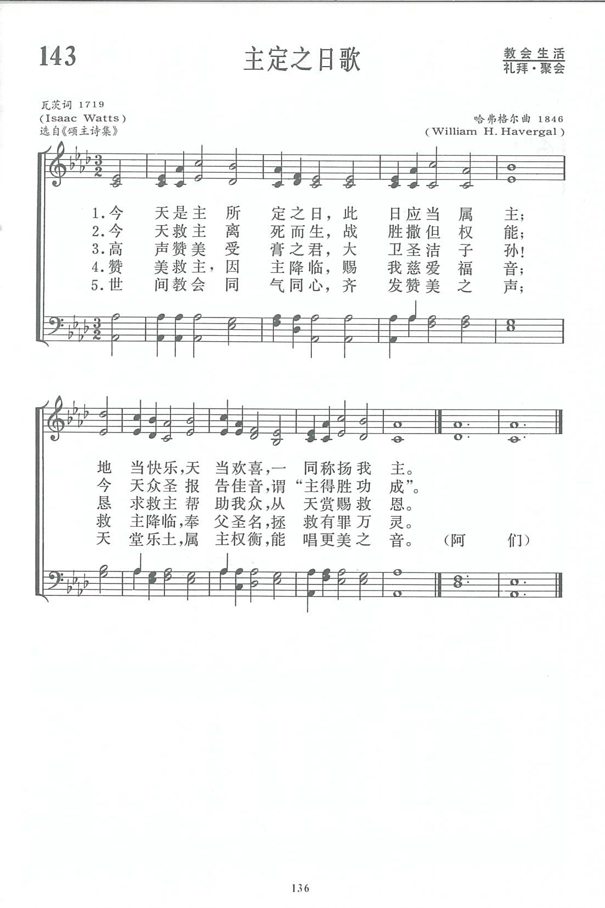
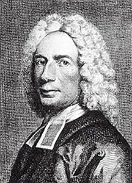
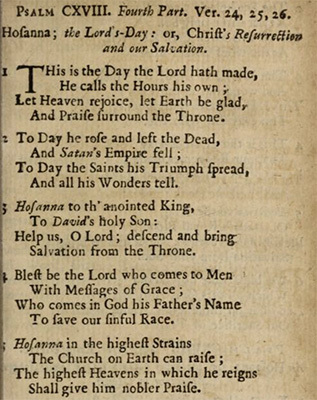

|
|
讚美詩(新編) 第143首《主定之日歌》 |
|
1 This is the day the Lord has made; 2 Today he rose and left the dead, 3 Hosanna to th'anointed King, 4 Blessed is Jesus Christ, who came 5 Hosanna in the highest strains
|
|
|
https://www.zanmeishige.com/tab/13816.html?songbook=1&index=143
 This Is the Day the Lord Hath Made (Psalm 118)
|
|
|
|
|
.jpg)

- This is the day that the Lord has made https://youtu.be/cccJhMVFrLs
| Text: | This Is the Day the Lord Hath Made (Psalm 118) |
| Author: | Isaac Watts |
| Tune: | NUN DANKET ALL' UND BRINGET EHR' |
| Composer: | Johann Crüger |

Notes
This is the day the Lord hath made, He calls the hours His Own. I. Watts. [Easter-day, or Sunday.] First published in his Psalms of David, 1719, p. 309, as a paraphrase of a portion of the 118th Psalm, in 5 stanzas of 4 lines, and headed, "Hosanna; the Lord's Day; or, Christ's Resurrection, and our Salvation." It is in several collections and usually unaltered and unabbreviated. In the Hymnary, 1872, the cento "Behold the tomb its prey restores," is composed of stanza i. new, ii.-iv. from this by Watts, slightly altered, and v. new. It is a successful hymn for Sunday.
--John Julian, Dictionary of Hymnology (1907)
Tune Information
| Title: | GRÄFENBERG |
| Composer: | Johann Crüger (1647) |
| Meter: | 8.6.8.6 |
| Incipit: | 16512 33235 43215 |
| Key: | F Major |
| Source: | Praxis Pietatis (1653);Praxis Pietatis Melica, 1647 |
| Copyright: | Public Domain |
| Short Name: | Johann Crüger |
| Full Name: | Crüger, Johann, 1598-1662 |
| Birth Year: | 1598 |
| Death Year: | 1662 |
Johann Crüger (b. Grossbriesen, near Guben, Prussia, Germany, 1598; d. Berlin, Germany, 1662)

Crüger attended the Jesuit College at Olmutz and the Poets' School in Regensburg, and later studied theology at the University of Wittenberg. He moved to Berlin in 1615, where he published music for the rest of his life. In 1622 he became the Lutheran cantor at the St. Nicholas Church and a teacher for the Gray Cloister. He wrote music instruction manuals, the best known of which is Synopsis musica (1630), and tirelessly promoted congregational singing. With his tunes he often included elaborate accompaniment for various instruments. Crüger's hymn collection, Neues vollkomliches Gesangbuch (1640), was one of the first hymnals to include figured bass accompaniment (musical shorthand) with the chorale melody rather than full harmonization written out. It included eighteen of Crüger's tunes. His next publication, Praxis Pietatis Melica (1644), is considered one of the most important collections of German hymnody in the seventeenth century. It was reprinted forty-four times in the following hundred years. Another of his publications, Geistliche Kirchen Melodien (1649), is a collection arranged for four voices, two descanting instruments, and keyboard and bass accompaniment. Crüger also published a complete psalter, Psalmodia sacra (1657), which included the Lobwasser translation set to all the Genevan tunes.
Notes
Composed by Johann Crüger (PHH 42) as a setting for Paul Gerhardt's "Nun danket all’ und bringet Ehr," GRÄFENBERG was first published in the 1647 edition of Crüger's Praxis Pietatis Melica. The tune is arbitrarily named after a water-cure spa in Silesia, Austria, which became famous in the 1820s.
The rhythmic structure of Crüger's tune has been altered in most hymnals by the adoption of "gathering" notes (longer beginning notes to every phrase) in the style of British psalm tunes. Originally the second and fourth phrases began with a quarter rest and quarter note. Sing in harmony or in unison with light accompaniment suited to this prayer hymn.
--Psalter Hymnal Handbook
第143首 主定之日歌 This is the day Lord hath made _W.H．Havergal
经文：“这是耶和华所定的日子，我们在其中要高兴欢喜”(诗118：24)。
这首诗是瓦茨(事略参阅第12首)根据诗篇第118篇第24节“这是耶和华所定的日子，我们在其中要高兴欢喜”而写，这节经文使人联想到新约时代的信徒如何正确对待主日。
曲谱叫《EVAN》，是威廉·亨利·哈弗格尔(W.H．Havergal，1793—1870)①于1847年所作。他是英国人,1815年毕业于牛津，后被按立为牧师。一次车祸使他受了伤，养伤期间他想改善英国教会的音乐，就收集了许多圣诗曲调。他写过一些有关诗篇音乐的文章，也写过一些乐曲，包括一些赞美诗的曲调。
他和他的女儿弗朗西丝.哈弗格尔(第336、341、342首的作者)都热心从事布道工作。弗朗西丝于187O年出版了一本《老教会诗集》以纪念她的父亲，书内选了许多他父亲的圣诗曲调，还附带有不少有趣的曲调注释。
①《新编》内有两位哈弗格尔。请参阅作者索引。
History of Hymns: 'This Is the Day the Lord Hath Made'
BY VICTORIA SCHWARZ

“This Is the Day the Lord Hath Made”
by Isaac Watts
The United Methodist Hymnal, 658
This is the day the Lord hath made;
he calls the hours his own.
Let heaven rejoice, let earth be glad,
and praise surround the throne.
The year 1719 is interesting in music history: Domenico Scarlatti took up a new post in Lisbon as music director to João V of Portugal; Alessandro Scarlatti’s opera Marco Attilio Regolò was premiered in Rome; Johann Sebastian Bach was working as the music director for Prince Leopold of Anhalt-Köthen; the Royal Academy of Music in London opened with George Frideric Handel as its music director; and Isaac Watts (1674–1748) published his hymn collection titled The Psalms of David Imitated in the Language of the New Testament, and Applied to the Christian State and Worship, which included “This Is the Day the Lord Hath Made”.
It’s not often we see hymn writers located beside other notable composers and authors of their time. I know that I am guilty of siloing important figures in hymn history from their peers. For example, when I think of Charles Wesley, I don’t think of C.P.E. Bach, Gluck, and Haydn; or, when I think of Fanny Crosby, I don’t think of Chopin, Wagner, Liszt, or even Fanny Mendelssohn. Just as Handel and J.S. Bach were prominent in the formation and performance of music during the Baroque period, Watts helped change how people sang (and sing) in the church by facilitating the change from metrical versification to rhymed paraphrase.
Although the Lutheran church in Germany had been singing hymns for about one hundred years by Watts's time, the English churches followed the model of the Calvinists. Because of this, Watts, raised in the Independent Church, was accustomed to singing metrical psalms. Many accounts of his life detail that Watts showed an early dissatisfaction with this practice. Watts’s dissatisfaction is discussed in a Center for Church Music article, which reads:
Frustrated with the heartless psalm singing of his time, young Watts sometimes criticized the singing at his church. Listening to his concerns one day, Watts's father challenged him, “Well then, young man, why don’t you give us something better to sing?” He rose to the challenge by writing his first hymn [“Behold the Glories of the Lamb”]. It was well received by the congregation of the Mark Lane Independent Chapel, where he attended, and for the next two years, Watts wrote a new hymn for every Sunday. (Center for Church Music)
Watts’s success opened a path to several publications, but he considered his Psalms of David his most significant work. In authoring this work, he declared as part of his purpose the desire to “improve psalmody and religious singing.” Alan Gaunt highlights that Watts took care to praise the book of Psalms as “the most noble, most devotional and divine collection of poesy.” Watts had a strong assessment in the use of psalms for Christian worship when he wrote, “it must be acknowledged still, that there are a thousand lines in it which were not made for a church in our days to assume as its own” (Watts in The Methodist Review, 167.).
“This Is the Day the Lord Hath Made,” written in Watts’s paraphrase style and based on Psalm 118—the concluding psalm of the Hallel Psalms (113–118) in scripture—is one example of his form of Christianized psalms. As is the case with all psalms, which have strong ties to Jewish practice, these were recited or sung during the Passover meal and other festivals. Interestingly, a bridge to Christ in the New Testament may be authentic. Some research suggests that Psalm 118 may have been the "hymn" that Jesus and the disciples sang after the Last Supper.
Many people recognize portions of Psalm 118 because this psalm contains some of the most familiar language of the church, such as “His steadfast love endures forever!” (v. 1b), “the Lord is my strength and my might; he has become my salvation” (v. 14), and “the stone that the builders rejected has become the chief cornerstone” (v. 22). It seems this psalm may have been a favorite of Watts as well, for he composed three versions of Psalm 118 in The Psalms of David, using common meter (in four parts), short meter, and long meter The stanza comes from the fourth common meter paraphrase in five stanzas devoted to Psalm 18:24, 25, and 26.
In addressing this, Watts’s style included the crafting of paraphrases that enabled him to add New Testament language, thought, and theology to bear upon the psalms. In a previous “History of Hymns” article on Watts, Michael Hawn wrote:
From an early age, he [Watts] showed his dissatisfaction for the established common practice of metrical psalms, the strict poetic versification of the psalms for congregational singing in worship. He pioneered a newer approach by composing hymns that “Christianized” the texts of the Psalter. (Hawn, “History of Hymns: Come, We that Love the Lord”)
Watts’s Christianizing of the psalm is apparent in the ascription to the paraphrase: “Hosanna; the Lord’s-Day; or Christ’s Resurrection and our Salvation.” The facsimile that follows is from a 1719 edition. Note the various New Testament references in stanzas 2, 3, 4, and 5.

The hymn text in The United Methodist Hymnal (UMH) consists of a single stanza from Watts's common meter setting, which originally includes nineteen stanzas divided into four parts. The text of this single stanza was derived from a variety of sources, beginning with verse 24 of Psalm 118. David Music reminds us that the words, “This is the day which the Lord hath made; we will rejoice and be glad in it,” were sung as the introit for Easter Sunday in the medieval church (Music, 2020, pp. 199–200). This use is closely aligned to Watts’s purpose in crafting this hymn. Watts clarified the "day" to which he was referring as the day of Resurrection by writing, “This is the Day wherein Christ fulfill’d his Sufferings, and rose from the Dead, and has honoured it with his own Name (Rev 1:10). The Lord’s Day” in his notes on the text.
Beyond identifying this particular day, Watts successfully conflates dual meanings of “the day the Lord has made” by intertwining Psalm 118:24a and Revelation 1:10 for the opening line of this stanza. By doing this, he brings the psalmist's words about the work of the coming Messiah into conversation with the author of Revelation, who declares the work accomplished by Christ. Watts crafts the last line of this stanza similarly, saying, “we will rejoice” (v. 24b) brought forward to the Revelation 7:9–12 scene by Watts’s words “praise surround the throne.”
The second and third lines of the stanza have remarkable intertextual possibilities as well. “He calls the hours His own” finds echoes in Genesis 1:5 (“And God called the light Day, and the darkness he called Night. And the evening and the morning were the first day.”) and Job 38:12 (“Have you commanded the morning since your days began and caused the dawn to know its place”), but also in Matthew 24:36, KJV (“But of that day and hour knoweth no man, no.”) and John 11:9 (“Jesus answered, Are there not twelve hours in the day?”). These are intriguing connections that offer a deeper relationship between scripture and text and bring a heightened sense of being in awe of God’s holy ability to craft the hours of our days. However, most scholars consider Watts's words a call or reminder to Christians to assemble on the “day the Lord hath made,” the first day of the week, and offer their praise on that day.
One of the most notable features of the text, beyond the textual strength of connection to many points in scripture, is its ability to draw these various scriptures together through primarily monosyllabic words for singability. Written in iambic poetic meter and consisting of twenty-six words (for this stanza), only four are more than one syllable, and these are all two-syllable words. Alan Gaunt writes about Watts’s distinctive style of hymn language:
Watts’s unerring sense of the right way of saying things, with economy and strength, was the foundation of his skill as a hymn writer. Watson has noted that “his hymnody is not difficult or spectacularly metaphorical so much as attentive to the need to find the correct word ‘in the discourse in which it stands without destroying the rhyme or the rhythm” (1997, p. 139). He continues: “Watts’s hymns depend for their effect not just on their crisp vocabulary and their clarity, but on their “numbers”: on the way in which the words, punctuation, stress and rhythm become elements in the line, with the lines constituting the verse' (p. 141). Watts’s decision to exclude from his hymns the more spectacular flights of poetic language found in “The Adventurous Muse” is part of a Puritan restraint that gives his work a seriousness that tempers and mixes with the evident joy (Gaunt, . Canterbury Dictionary).
The United Methodist Hymnal pairs this text with the tune TWENTY-FOURTH, attributed to Lucius Chapin (ca. 1813). The first line of the melody springs from the dominant up to the tonic for the opening words “this is,” lending a sense of immediate arrival. The melody then rises to “day,” elevating the voice and the importance of the word as the primary focus in the text. The following phrase employs a hint of text painting by ascending vocally to acknowledge God who designs and owns the hours of both “this day” and the hours of the day of Christ’s work of Resurrection. The third phrase adds two quick rhythmic flourishes, highlighting the joy and praise of heaven and earth. We should also note that heaven’s praise lies a little higher melodically than earth’s. The final phrase ends with a sturdy surrounding of the tonic as voices sing “praise surround the throne.”
Hymnary.org shows an additional twenty-seven hymn tunes that have been paired with this text. The most frequent pairing is with CROSS AND CROWN (329 hymnals), distinguished by a triple-meter, regal, and uplifting tune. Other frequent tunes are BROWN (115), IRISH (112), and DOWNS (175). Although TWENTY-FOURTH is lovely and well-suited to the text, a song leader looking for a fresh musical expression might look to IRISH, which is beautifully melodic, easily sung, and allows the text to rise from the trappings of duple meter.
At the opening of this article, I veered away from the usual beginning of a “History of Hymns” column by locating Watts among prominent musical figures of his time. Acknowledging the larger context of the culture in which hymns arise is helpful. Even after a brief discussion of this one stanza from The United Methodist Hymnal, it is remarkable to think about the musical advancements and flourishes of the Baroque era next to Watts's work. He lifts hymnody from the traditional restraints of his church experience. I marvel at the encompassing and expansive beauty of God who inspired the great Passions of Bach and other significant works when placed next to words crafted by Watts.
SOURCES:
Alan Gaunt, “Isaac Watts,” The Canterbury Dictionary of Hymnology. Canterbury Press, http://www.hymnology.co.uk/i/isaac-watts (accessed June 20, 2021).
Alan Gaunt, “This Is the Day the Lord Hath Made,” The Canterbury Dictionary of Hymnology. Canterbury Press, http://www.hymnology.co.uk/t/this-is-the-day-the-lord-hath-made (accessed June 20, 2021).
C. Michael Hawn, “Come, We That Love the Lord,” History of Hymns. Discipleship Ministries, https://www.umcdiscipleship.org/resources/history-of-hymns-come-we-that-love-the-lord, (accessed June 18, 2021).
The Methodist Quarterly Review, volume 26, edited by George Peck (New York: G. Lane and C. P. Tippett, 1844)
David W. Music, Repeat the Sounding Joy: Reflections of Hymns by Isaac Watts. (Macon, GA: Mercer University Press, 2020), p. 199.
“Songs and Hymns - Isaac Watts,” Center for Church Music, https://songsandhymns.org/people/detail/isaac-watts (accessed June 18, 2021).
“This Is the Day the Lord Hath Made, ” Hymnary.org tune index, https://hymnary.org/search?qu=textAuthNumber%3A%22%5Ethis_is_the_day_the_lord_hath_made_he_ca%24%22%20in%3Atunes&sort=matchingInstances&order=asc (accessed July 1, 2021).
https://www.umcdiscipleship.org/articles/history-of-hymns-this-is-the-day-the-lord-hath-made
Victoria Schwarz is a provisional deacon in the Rio Texas Conference. She serves as the associate pastor and minister of music at Berkeley United Methodist Church in Austin, Texas. She is active in the Fellowship of United Methodists in Music and Worship Arts.
How Can "This Is the Day the Lord Has Made" Encourage Trust and Hope?
Jeannie Myers | Author 2020 24 Sep
How Can 'This Is the Day the Lord Has Made' Encourage Trust and Hope?
Psalm 118:24 rings with praise and joy, “This is the day that the Lord has
made; let us rejoice and be glad in it.” Children sing it; artists hand-letter
it on decorative plaques. But what is the psalmist rejoicing about? Is this an
injunction to be happy every day or is he talking about a specific Day of the
Lord?
Almost half of the Psalms include text that denotes David, king of Israel, as
their author. Psalm 118 does not name its writer, but most Bible scholars
believe it was penned by King David.
David’s road to kingship was a rocky one. Anointed by God to the kingship as a
youth around 10-15 years old, he was not enthroned as king over all Israel until
he was 37 years old. The intervening decades found him serving as shepherd,
court musician, and soldier. You know the rags-to-riches stories where the icon
of success says they spent the first few decades of their life flipping burgers
and scrubbing floors? David had been anointed as king, but he was still doing
monotonous, low-paying, hard labor.
There were moments when God’s glorious power came blazing into view - that giant
in 1 Samuel 17 for one – but those victories were often followed by attacks so
fierce, David fled for his life. He hid in fields and caves and foreign cities,
in the wilderness and in the mountains.
Chased relentlessly by a jealous king and his army, David wrote many anguished
Psalms begging God for help. In Psalm 35:17, he cries, “How long, Lord, will you
look on? Rescue me from their ravages, my precious life from these lions.”
How Can 'This Is the Day the Lord Has Made' Encourage Trust and Hope?
What Is Happening in Psalm 118?
Scholars believe that Psalm 118 was written when David was enthroned at
Jerusalem. After all that rejection and fear and struggle, David finally sees
the fulfillment of God’s promise and rejoices.
Verses 1-4: Give Thanks to the Lord
David is bursting with joy at the goodness of God and urges his people and all
who fear the Lord to join him in celebration. He gives two reasons for
thanksgiving: God’s goodness and His enduring love.
God by His very nature is good; it is the essence of who He is. There is no evil
in Him, and His every decision at every moment is coming from His goodness. In
John 1:5 we read, “God is light; in Him there is no darkness at all.” David
looks at the glorious perfection and purity of God’s character and shouts, “Give
thanks to the Lord, for He is good! His love endures forever” (Psalm 118:1). God
has always been full of mercy and kindness, and He always will be. Nothing can
stop His love. Romans 8:38-39 declares, “For I am convinced that neither death
nor life, neither angels nor demons, neither the present nor the future, nor any
powers, neither height nor depth, nor anything else in all creation, will be
able to separate us from the love of God that is in Christ Jesus our Lord.”
David’s heart cry is for God to receive praise for this astonishing, abounding
love.
How Can 'This Is the Day the Lord Has Made' Encourage Trust and Hope?
Verses 5-18: Trust in the Lord
David has learned from personal experience that man cannot be trusted. Saul, the
jealous king who tried to hunt him down, repeatedly promised to no longer harm
him but failed to keep his word. With a crazed monarch intent on destroying him,
David found that no other living person could help him. Only God could protect
him.
In verses 5-8, he testifies,
“When hard pressed, I cried to the Lord;
He brought me into a spacious place.
The Lord is with me; I will not be afraid.
What can mere mortals do to me?
The Lord is with me; He is my helper.
I look in triumph on my enemies.
It is better to take refuge in the Lord
than to trust in humans.”
Even when far outmatched, surrounded, and without hope from a human standpoint,
David did not have to be afraid. He was not alone. God intervened to not only
save David’s life but also to give him strength and joy smack dab in the middle
of his trials. David has seen with his own two eyes that his God is powerful
enough to rescue him from the strongest of foes. In verse 14 he proclaims, “The
Lord is my strength and song; and He has become my salvation.”
How Can 'This Is the Day the Lord Has Made' Encourage Trust and Hope?
Verses 19-21: The Gate of the Lord
Most Bible scholars believe that while David was rejoicing here over his
triumphal entry into the city of Jerusalem, he was also foretelling the coming
of a Messiah who would become the gate to salvation.
In John 10:7-9, Jesus says, “Very truly I tell you, I am the gate for the sheep.
All who have come before me are thieves and robbers, but the sheep have not
listened to them. I am the gate; whoever enters through me will be saved. They
will come in and go out and find pasture.”
In Jesus’ day, only ceremonially clean Israelites could pass through the temple
gates into the house of the Lord. The temple is a picture of God’s holiness. In
His purity and perfect justice, God cannot abide sin in His presence.
Knowing that we would sin and be unable to enter God’s presence on our own
merit, Jesus made Himself a gate by which we could be made right with God. When
we put our trust in Him, He takes our sin and gives us His righteousness in
exchange. We walk through the Gate and find ourselves cleansed and blameless,
able to fellowship freely with holy God.
In John 14:6, Jesus tells his disciples, “I am the way and the truth and the
life. No one comes to the Father except through me.”
David thanks God for His salvation in Psalm 118:20-21.
“I will give You thanks, for You answered me;
You have become my salvation.”
How Can 'This Is the Day the Lord Has Made' Encourage Trust and Hope?
Verses 22-29: This Is the Day
Most commentators agree that this last portion of Psalm 118 refers to both David
and the coming Messiah. David was rejected by men but then made by God into the
chief cornerstone of Israel. He stands amazed at God’s work in taking an exile
and making him the king. “This is the Lord’s doing; it is marvelous in our eyes”
(v. 23).
In Matthew 21:42, Jesus referred to Himself as the cornerstone when he quoted
Psalm 118:22-23. He was rejected by the religious leaders, the “builders,” but
God made Him into the chief cornerstone on which the Church is built.
At Jesus’ triumphal entry into Jerusalem, the crowds greet Him by shouting Psalm
118:26, “Blessed is he who comes in the name of the Lord!”
This is the context in which David declares, “This is the day that the Lord has
made; let us rejoice and be glad in it” (verse 24). Commentators therefore
believe that the day in question is Christ’s triumphal entry into Jerusalem, His
resurrection from the dead, or the gospel era that these events ushered in.
Charles Hadden Spurgeon explains, “A new era has commenced. The day of David’s
enthronement was the beginning of better times for Israel; and in a far higher
sense the day of our Lord’s resurrection is a new day of God’s own making, for
it is the dawn of a blessed dispensation.”
In this new era, animal sacrifices are no longer required because Jesus offered
Himself as the once-and-for-all, ultimate sacrifice. God made a new way, a new
and better gate through which we can enter His presence. “This is the day that
the Lord has made; let us rejoice and be glad in it!” (Psalm 118:24).
Does the Translation Have an Impact?
Most translations are aligned with the English Standard Version quoted above.
The New International Version is markedly different, and in context, is a little
clearer that the day in which to rejoice is the day in which God made Jesus the
cornerstone.
“The stone the builders rejected
has become the cornerstone;
the Lord has done this,
and it is marvelous in our eyes.
The Lord has done it this very day;
let us rejoice today and be glad."
(Psalm 118:22-24)
How Can 'This Is the Day the Lord Has Made' Encourage Trust and Hope?
Why Should We Rejoice and Be Glad?
What, after all, are we being saved from? We’re not being chased by a powerful,
jealous ruler or facing a giant who despises us and our God. Or are we?
As long as the sun has burned in the sky and the earth has spun on its axis, God
has had an enemy. That foe knows that the best way to hurt God is to harm the
people He created and loves. What would be worse than someone weaseling their
way into your child’s heart, convincing them that you didn’t love them or want
the best for them, and enticing them to rebel against you, to run away and never
return?
Satan tricked the first people on earth into distrusting God and rebelling
against Him, binding them to himself in slavery to sin, and he’s continued
hunting us ever since. 1 Peter 5:8 warns, “Be alert and of sober mind. Your
enemy the devil prowls around like a roaring lion looking for someone to
devour.”
He ensnares our hearts before we can walk, teaching us to serve ourselves, to
fight for our way, our plan, our desires. By the time we can talk, we are at war
with the world and any authority who dares tell us no. In our sin, we are really
at war with God. We reject His authority, His strange way of running the world.
Satan’s plan has worked, and we are his prisoners and pawns in his fight against
King of Kings.
But the King sees us floundering and wounded as we battle against Him and in His
love and mercy makes a way of salvation, a Gate we can pass through. Our filthy
armor is traded for the robes of a prince or princess, a son or daughter of the
very King we were fighting against.
“For he has rescued us from the dominion of darkness and brought us into the
kingdom of the Son he loves, in whom we have redemption, the forgiveness of sins
… Once you were alienated from God and were enemies in your minds because of
your evil behavior. But now he has reconciled you by Christ’s physical body
through death to present you holy in his sight, without blemish and free from
accusation” (Colossians 1:13-14, Colossians 1:21-22).
When Jesus rode into Jerusalem, it was as a triumphant King preparing to conquer
our enemy and bring us into His kingdom and adopt us into His family. Zechariah
9:9 foretold the crowd’s reaction to His arrival,
“Rejoice greatly, Daughter Zion!
Shout, Daughter Jerusalem!
See, your king comes to you,
righteous and victorious,
lowly and riding on a donkey,
on a colt, the foal of a donkey.”
The Hero has come. The enemy will be vanquished. It’s the moment in the movie
when all is lost, when the dark side is getting ready to overrun the fortress,
and the hero crests the hill with his army. He is here!
How Can 'This Is the Day the Lord Has Made' Encourage Trust and Hope?
How Can We Apply This Verse to Our Lives?
We so easily forget the great battle that was waged for our freedom, the price
that was paid to rescue us from slavery. The world around us beckons with shiny
cars and perfectly posed model families and sleekly staged houses replete with
fresh flowers on the farmhouse table. “You’re missing out,” Satan whispers, “And
you’re falling short.”
Many of us are facing real pain and real fear, and it feels like the darkness is
winning. But our Hero has already won the war. He is here! We have reason to
rejoice, even now, even smack dab in the middle of our trials.
“Praise be to the God and Father of our Lord Jesus Christ! In his great mercy he
has given us new birth into a living hope through the resurrection of Jesus
Christ from the dead, and into an inheritance that can never perish, spoil or
fade. This inheritance is kept in heaven for you, who through faith are shielded
by God’s power until the coming of the salvation that is ready to be revealed in
the last time. In all this you greatly rejoice, though now for a little while
you may have had to suffer grief in all kinds of trials. These have come so that
the proven genuineness of your faith—of greater worth than gold, which perishes
even though refined by fire—may result in praise, glory and honor when Jesus
Christ is revealed. Though you have not seen him, you love him; and even though
you do not see him now, you believe in him and are filled with an inexpressible
and glorious joy, for you are receiving the end result of your faith, the
salvation of your souls.” (1 Peter 1:3-9)
We can look our guilt and pain and fear square in the face, turn our eyes to
Jesus, and say with King David,
“The Lord is my strength and my song;
he has become my salvation” (Psalm 118:14).
“This is the day that the Lord has made;
let us rejoice and be glad in it” (Psalm 118:24).